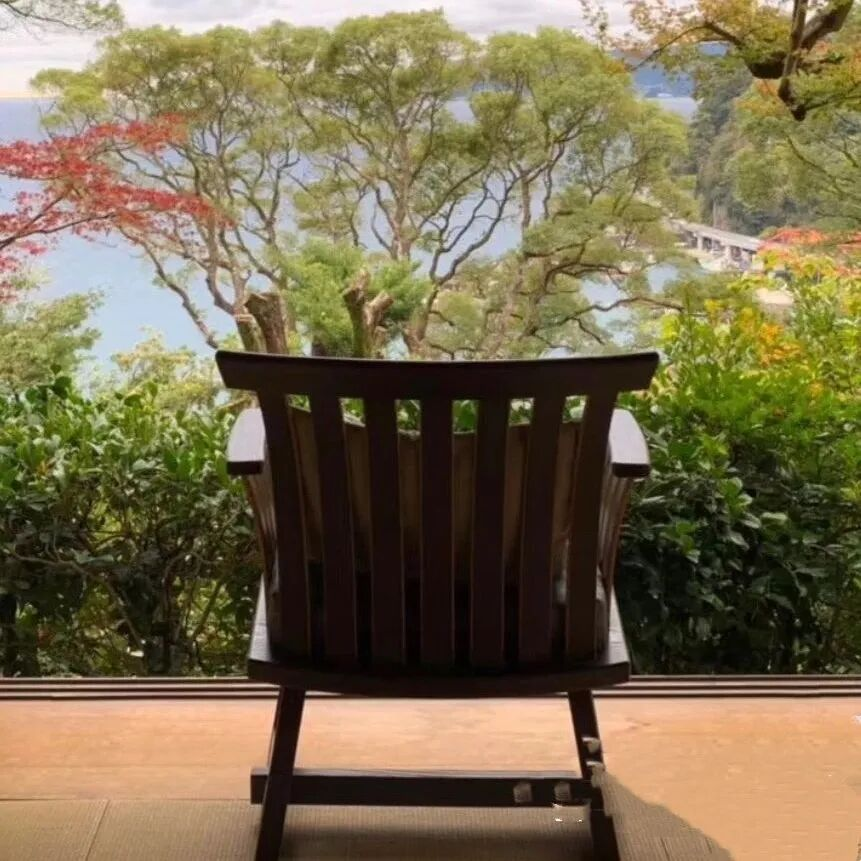
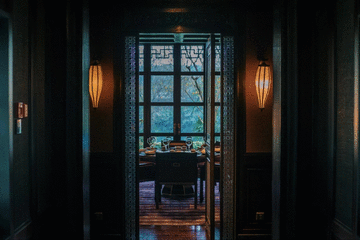
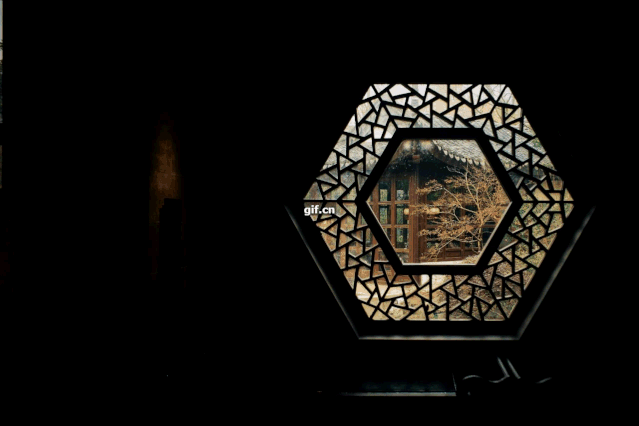
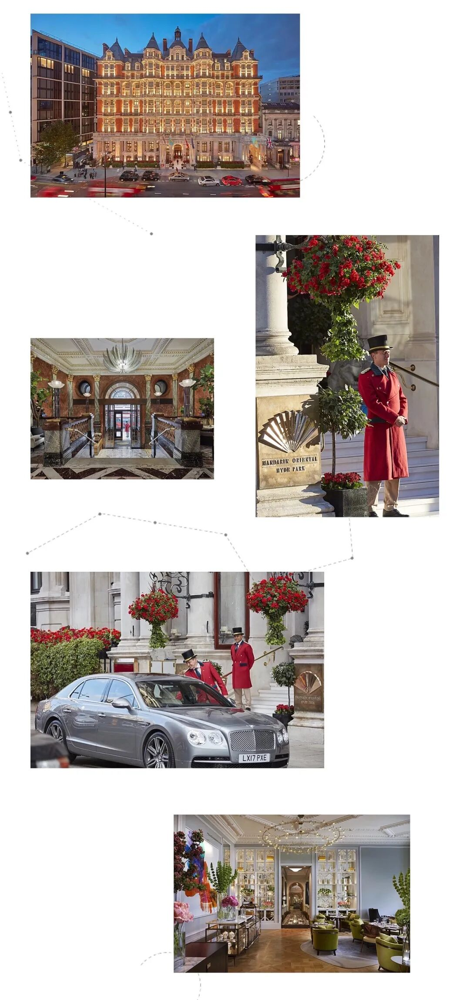
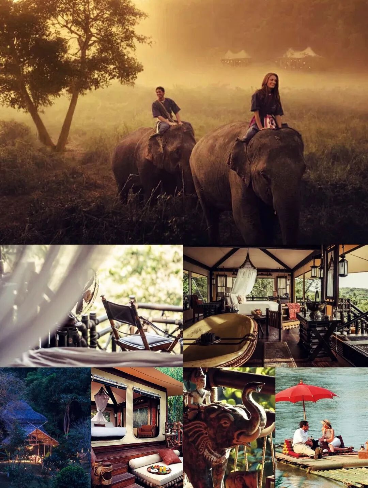
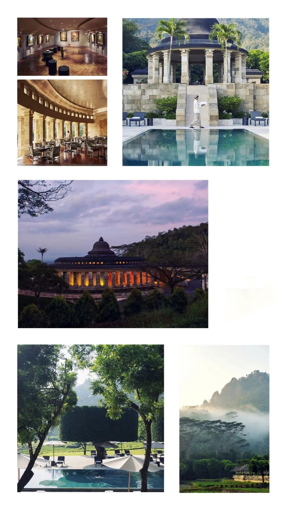
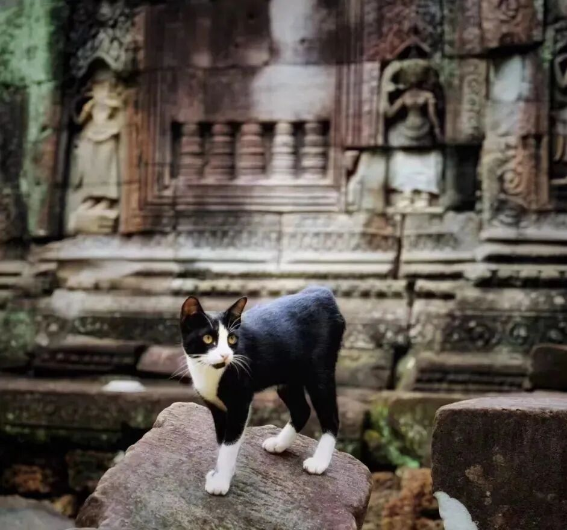
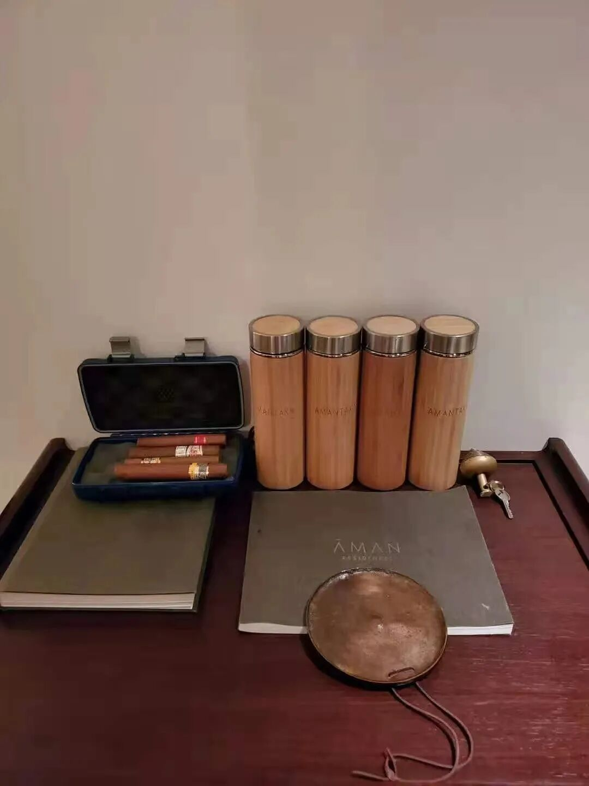

酒店，这个概念对你意味着什么？

懒得写字的博主 | Deanna
好的酒店，虽然是一个公共场所却能给我带来很私人的体验，以及很私密的感觉
X

本期嘉宾 | 于董
酒店就像红烧肉，哪里都有
但肯定有很特别的，很好吃的，很特别以及很好吃的
在杭州生活一段时间后，大大小小馆子吃了一轮，逐渐理解 ”杭州是美食荒漠“ 这句话，which means . . .
不是没有好吃的餐厅，但得提前很久订，久得深不可测；而那些能临时订到的餐厅，一定不好吃。
最难订的，当数四季酒店金沙厅。
究竟如何才能订到？住店客人优先制？还是提前几周电话预约？一直是个令人费解的谜。总之就特么要你付出，不是时间就是金钱，与投资和追女神有异曲同工之妙。
毕竟是全球 Four Season 业绩 No.1的餐厅，米其林算不上，黑珍珠总算榜首。都说这类榜单是针对中产征收的“智商税”，我到觉得其实与智商高低无关，有时候智商越高缴得越多。
我智商平平，又懒得排队，就让智商高的于董去”缴税“，他果然不负所托。
如何订到的，我依然不得而知。
于董说：“这个不难。”
从此，订到金沙厅又多了一种方法。

西子湖四季隐匿在西湖的西北角，天气好的日子，步行就可以，还能顺便逛逛北山路、杨公堤、曲院风荷、岳庙。可惜今夜冷雨纷纷，我结束了一天的工作，只好匆匆驱车前往。
西湖景区里的酒店不多，两家国宾馆、北上香、紫萱，还有西子湖四季。吃饭前酒店里逛一圈，就是一个中式园林，园子不大，亭台楼阁、泉水花木，咫尺之内再造乾坤。

于董负责点菜，没有一道是网红必点或主厨推荐（主厨王勇大概要昏过去），它们躲在菜单上不起眼的地方，却道道都珍稀又好吃。
于董早年混迹金融圈，之所以被称为“于董”，因为在财富自由后，又四处投资公司，不小心股民做成股东。
他酷爱旅行，尤其痴迷住不同的奢华酒店，终极理想是在山野秘境开一家只有几间客房的酒店，就像京都虹夕诺雅。此外，他每周坐飞机挑不同城市不同公司开股东会，航旅纵横显示2020年度，他打败了99.8%的用户，飞行了72,505公里，133小时。以至于他的大部分员工都没见过他，在年会上终于见到真人了也不敬酒，于董逃过一劫。但各大酒店的侍从们，倒是都记得他，一进门就说于先生又来了。
真是一个令人费解的男人！
却又有钱有闲，志趣不凡
当然得邀请来做我公众号的嘉宾
Let’s Start！
.
.
.
旅行时什么会最吸引你？
旅行时吸引我的是过程。例如，如何到达一个地方，到了之后住哪里，怎么消磨完时间，有没有感兴趣的历史之类。
酒店，这个概念对你意味着什么？
意味着是日常生活密不可分的一部分。
其实例如到达，沿途风景，到达之后的天气，第一次的被问候，都会影响我对酒店的印象。就好像红烧肉，哪里都有，但肯定有很特别的，很好吃的，很特别以及很好吃的。
你住过多少家酒店？列举一些
没统计过。按照近15年来平均因公因私40次出门，去除固定住的酒店，应该300间这样子。十几间安缦，八九间四季，一些MO等等。
四季和MO会上你的榜，有点意外
伦敦的MO很好，清莱丛林里的四季也很好。伦敦MO很多网上的数字说明他很棒，例如维多利亚风格建筑，超级大的花园，后门通往海德公园等等。但是，我喜欢中式早餐！
emm…
开玩笑的
这个玩笑make sense

清莱四季准确说在金三角。因为产品形态是帐篷，CI时要坐船通过浑浊的湄公河。金三角，湄公河，丛林，帐篷，大象，光这些就足以让当时的我觉得很棒了。
大象也能在 Check-in 沿途看到？
大象是酒店的标志吧，各种logo随处可见，村子里也有。

睡完全世界的安缦，究竟哪家最深得你心？
远远没睡完安缦，还有很多不确定。
我迷恋古迹时，会觉得Amanjiwo是人间天堂。无论夕阳还是朝阳，都离那个硕大神秘的婆罗浮屠这么近。jiwo，爪哇，多有南洋风味。

这是我在吴哥窟拍的，我也很迷这些原始丛林里散落的断壁残垣。
Amansara在小吴哥，曾经是西哈努克行宫。曾经很便宜，3500一晚，这几年被炒到1万多了吧。

走的地方越来越多之后，旅行有哪些改变？
对我来说没什么太多的改变。可能年轻时不愿意重复，喜欢尝试新鲜的。年长后变得恋旧与佛系。年轻时总换酒店，现在频率会低一些。
对你来说，最理想的旅行方式是什么？
毫无目的，随心所欲。偶有惊喜的，不超过一周的。
那你心中有Top One的酒店吗？
阶段性都会有的。前面说过，迷恋古迹时有，迷恋海岛时也有，总在变化。我会有觉得最好的moment，以及画面，但没有最好的酒店。庸俗的说就特么下一个最好。
渣男！哈哈哈哈哈哈哈。
会一去再去的酒店有哪些？
Amanfayun，松赞系列的梅里，塔城，茨中山居，仁安悦榕庄等等。
你如何诗意地在酒店浪费时间？
带上三星galaxy z fold2，雪茄，岩茶，运动装备。

特么答完了
我擦，真累
这回复工作量等于我批一周的邮件了
...

2021.01.13
——
END